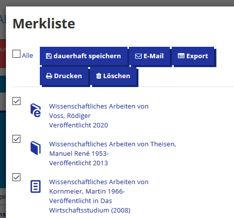
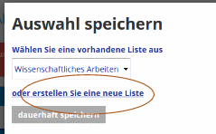
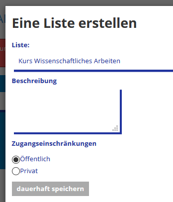
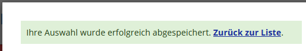
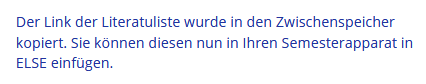

(Gast-Rechte oder Studierenden-Rechte reichen nicht).
- Klick auf „Bearbeiten einschalten“
- Klick auf „Material oder Aktivität anlegen“
- ELSE auswählen
- Speichern und anzeigen
- Führen Sie Ihre Recherche im HAW-Katalog durch und markieren Sie alle gewünschten Medien mit dem Stern-Symbol
- Durch Klick auf die
können Sie Einträge auswählen
und „dauerhaft speichern“:
 - Nun können Sie neue Liste erstellen:

- Vergeben Sie einen Namen und setzen Sie die Zugangsbeschränkungen auf „Öffentlich“: 
- Nach „dauerhaft speichern“ erscheint die folgende Meldung.
Wechseln Sie „Zurück zur Liste“…

…und klicken Sie dort auf:
Sie sollten dann folgende Bestätigun sehen:

Info: Der Listen-Link besteht aus der vollständigen Adresse der Literaturliste, z.B.: „https://dev.haw.beluga-core.de/vufind/MyResearch/MyList/123“
- Print-Bücher können entweder als reine Literaturhinweise aufgenommen werden (diese sind sofort „aktiv“) oder für einen physischen Semesterapparat in der Fachbibliothek vor Ort bestellt werden. Im zweiten Fall wird dieses Buch von den Bibliotheksmitarbeiter*innen bearbeitet und ist dann „aktiv“, wenn es im Semesterapparat der Fachbibliothek zur Verfügung steht.
- E-Books und E-Artikel aus dem Bestand des HIBS sind sofort „aktiv“. Hinweis: Diese E-Medien sind nur innerhalb des HAW-Netzes bzw. per VPN-Zugang nutzbar.
- Print-Artikel können im Moment nur als Literaturhinweise eingebunden werden. Ein Digitalisierungsservice für Print-Artikel bzw. Auszüge aus Print-Büchern ist in Planung.
 Mit dem Icon „Bearbeiten…“ können Sie die allgemeinen
Informationen des Semesterapparates bearbeiten.
Mit dem Icon „Bearbeiten…“ können Sie die allgemeinen
Informationen des Semesterapparates bearbeiten.
Tragen Sie bitte hier im Feld „Bemerkungen für
die HIBS-Mitarbeiter*in…“ ein, für wen dieser Semesterapparat
angelegt wird, z.B. „Semesterapparat für Prof. Else Müller“,
damit die Bibliotheksmitarbeiter*innen den Semesterapparat korrekt dem/der
Lehrenden zuordnen können.
An dieser Stelle können darüber hinaus
- weitere allgemeine Informationen bearbeitet werden (z.B. Änderung der Fachbibliothek oder des Semesters),
- die Ex- und Importfunktion genutzt werden (s. 17.),
- Hinweise für die Studierenden und/oder das Bibliothekspersonal eingetragen werden.
 Über das Icon „Rückgabe“ (bei Print-Büchern, die
sich im physischen Semesterapparat befinden)
Über das Icon „Rückgabe“ (bei Print-Büchern, die
sich im physischen Semesterapparat befinden)  bzw. „Deaktivieren“ (bei E-Books und Literaturhinweisen)
bzw. „Deaktivieren“ (bei E-Books und Literaturhinweisen)können Sie einzelne Titel aus ELSE entfernen (lassen).
- neu bestellt (von Ihnen neu in Ihren Semesterapparat aufgenommen)
- wird bearbeitet(von der zuständigen HIBS Mitarbeiterin)
- ist aktiv (für die Studierenden in der ELSE-Liste sichtbar)
- wird entfernt(wurde von Ihnen zurückgegeben oder die Ausleihfrist ist abgelaufen)
- inaktiv(für die Studierenden in der ELSE-Liste nicht sichtbar)
 Falls Sie den Inhalt einer ELSE-Liste auch für das folgende Semester
verwenden wollen, nutzen Sie die Exportfunktion beim aktuellen SA und fügen
Sie den Inhalt über „Importieren“ in den neuen Semesterapparat
ein (Funktion „Export“ / „Import“ bei „Bearbeiten
der allgemeinen Infos des Semesterapparates“).
Falls Sie den Inhalt einer ELSE-Liste auch für das folgende Semester
verwenden wollen, nutzen Sie die Exportfunktion beim aktuellen SA und fügen
Sie den Inhalt über „Importieren“ in den neuen Semesterapparat
ein (Funktion „Export“ / „Import“ bei „Bearbeiten
der allgemeinen Infos des Semesterapparates“).